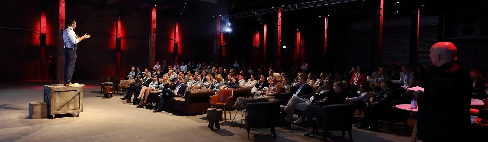
Keynote De Prijs van Smaak
Een persoonlijk en prijswinnend verhaal over keuzes maken en eigen verantwoordelijkheid. Met proefronde.
Meer over de keynoteSmoothieclub brengt je team in beweging met één verrassende metafoor: de smoothie. Samen blenden, proeven en presenteren. En aan het eind van de dag staan er concrete afspraken op tafel.
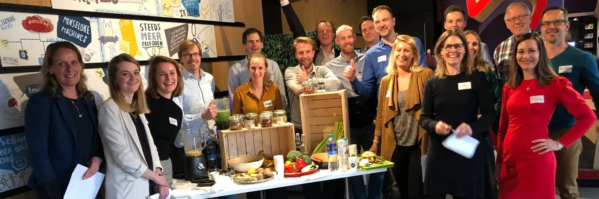
Onder meer vertrouwd door
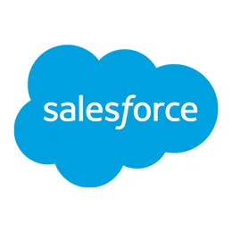
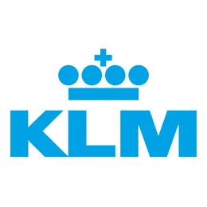
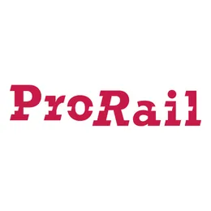
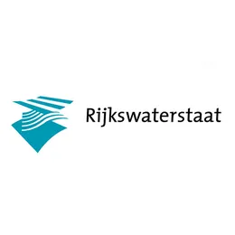
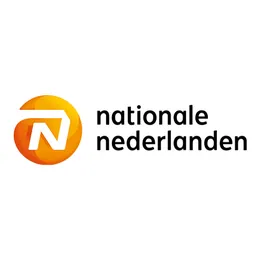
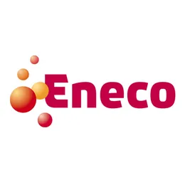
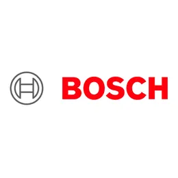
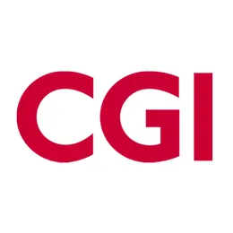
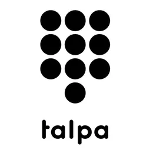
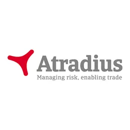
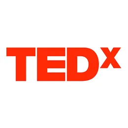
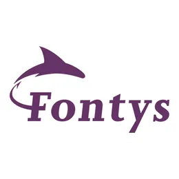
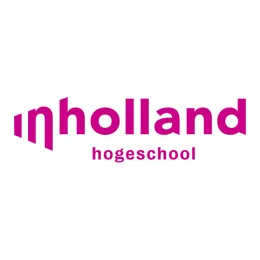
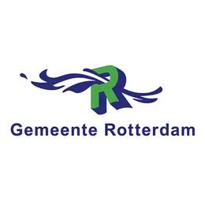
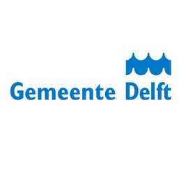
 Voor organisaties
Voor organisaties
Teamdag, heidag, personeelsfeest of congres. Een sessie die mensen raakt en in beweging zet.
Bekijk workshops & keynote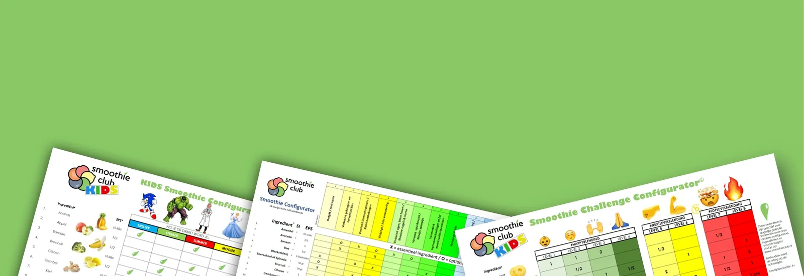
Voor thuisMet onze Smoothie Configurators blend je in één oogopslag. Ook voor kinderen vanaf 6 jaar.
Naar de webshopElk format is anders. De kern is hetzelfde: mensen willen wel veranderen, maar niet veranderd worden. Dus laten we ze het zelf ontdekken.

Een persoonlijk en prijswinnend verhaal over keuzes maken en eigen verantwoordelijkheid. Met proefronde.
Meer over de keynote
De energizer voor je event of personeelsdag. Luisteren, proeven en in groepjes zelf blenden.
Meer over de workshopElk ingrediënt staat voor een concrete actie. Je team blendt zijn eigen oplossing voor een echte uitdaging.
Meer over de teamworkshop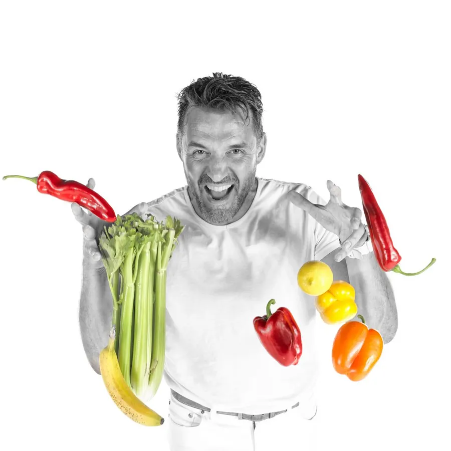
Een gezonde verrassing bij medewerkers thuis, samen uitgepakt tijdens een live webinar.
Meer over de BlendboxJij regelt de ruimte en het team. Wij de rest.
We bespreken wat er speelt in je team en wat de sessie moet opleveren. Binnen 1 werkdag heb je een voorstel.
We stemmen het programma af op jullie uitdagingen. Bij de teamworkshop voeren we vooraf 8 vertrouwelijke interviews.
We komen met blenders, dagverse groente en fruit. Na afloop heb je energie, inzicht en concrete afspraken.
In 2008 kreeg Jean-Marc Bilderbeek zijn eerste epileptische aanval. Drukke baan, 'lekker' en 'makkelijk' bepaalden zijn eetpatroon. De diagnose was een keiharde wake-up call: hij moest zelf veranderen.
Zijn zoektocht leidde naar de blender. En naar een inzicht dat verder gaat dan voeding: elke keuze heeft een prijs. Dat noemt hij de prijs van smaak. Sinds 2013 neemt hij teams en zalen mee in dat verhaal.
13 maart hadden we een (h)eerlijke workshop van Jean-Marc. Samen met mijn 60 collega's kregen we via een mooie smoothie-metafoor meer inzicht in het combineren van individuele kwaliteiten.
Jean-Marc weet op een ludieke en persoonlijke wijze een groep van bijna 50 projectleiders te overtuigen om eens iets anders te doen dan gebruikelijk.
Very knowledgeable, concrete and focused. Working with him is an absolutely valuable addition to your event.
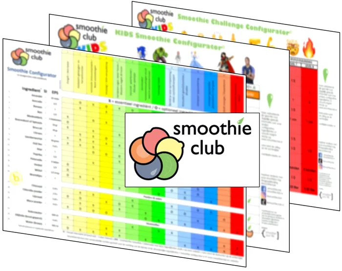
14 doelgerichte smoothies op één kaart, met 23 ingrediënten die je gewoon bij de supermarkt haalt. Je ziet in één oogopslag wat erin gaat en hoeveel. Voor kinderen zijn er speciale KIDS-versies.
Van een managementteam van 8 tot een zaal van 250. De teamworkshop werkt het best tot 80 deelnemers, de workshop Smoothen Your Life tot 100 en de keynote tot 250. Online met de Mystery Box kan zelfs tot 500.
Op iedere locatie in Nederland: bij jullie op kantoor, op de hei of in een zaal. Jij regelt de ruimte en het team, wij nemen de blenders, verse groente en fruit en alle materialen mee. We bouwen zelf op en af.
Dat hangt af van het format en de groepsgrootte. Reistijd, groente, fruit, blenders, materialen en de voorbespreking zitten er altijd bij in. Geen verrassingen achteraf. Vraag een voorstel aan en je hebt binnen 1 werkdag een prijs.
Nee. De smoothie is de metafoor, niet het doel. Het gaat om samenwerken, keuzes maken en verantwoordelijkheid nemen. Wel wordt er volop geproefd, gelachen en geproost op een gezonde samenwerking.
Ja. De keynote en de workshops zijn ook in het Engels te boeken, ideaal voor internationale teams.
Vaak binnen een paar weken. Bel of app even voor de actuele beschikbaarheid, dan weet je het meteen.
Vertel ons wat je team nodig heeft. Je krijgt binnen 1 werkdag een voorstel op maat. Stop de twijfel!

Jean-Marc Bilderbeek
Oprichter Smoothieclub. Je spreekt mij direct, geen tussenpersoon.